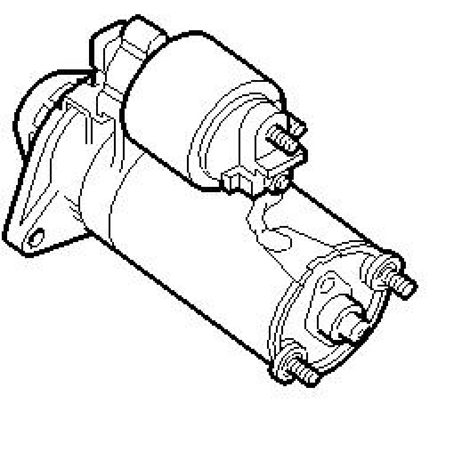

Starter Motor Does Not Crank
Starter Motor Does Not Crank

Fault symptom
No starter motor cranking.
Engine does not start.
Conditions
- No DTCs stored with the fault symptom in question.
- Key can be turned to ST position.
- Automatic: Selector lever in P.
- Manual US/CA: Clutch pedal depressed.
Diagnostic help
Check battery cable connections, to the battery and to the chassis, are tightened and have good contact without oxide or corrosion.
Most functions that can prevent starter motor cranking are monitored by self-diagnostics and therefore generate DTCs if they are faulty.
Fault diagnosis is only used for faults that are not monitored by self-diagnostics.